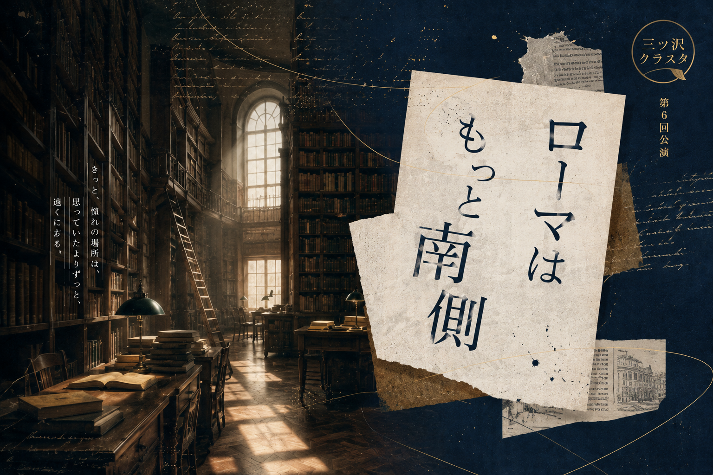

第6回公演 ローマはもっと南側
作品概要

作・演出 野田聡
出演 野田聡 松井麗 長谷川二奈
2026年9月に公演開始予定の三ツ沢クラスタの第六作目。
日常に存在するなかなか気づかないけど、いざ気づくと気になっちゃうこと。
ローマってこんなに北側にあったの？でもそれは誰も気づけない
考えだし始めたら、キリがない。それでも気になっちゃう！
気になったから仕方ないもん！
三ツ沢クラスタが描く、日々のちょっとした違和感に触れ合う人情劇。
そんな感じ？曖昧だけど仕方ない
- 公演依頼のお問い合わせ